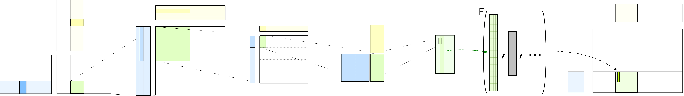

Quickstart
Prerequisites
CUTLASS requires: - NVIDIA CUDA Toolkit (11.4 or later required, 12.0 recommended) - CMake 3.18+ - host compiler supporting C++17 or greater (minimum g++ 7.5.0) - Python 3.6+
CUTLASS may be optionally compiled and linked with - cuBLAS - cuDNN v7.6 or later
Initial build steps
Construct a build directory and run CMake.
$ export CUDACXX=${CUDA_INSTALL_PATH}/bin/nvcc
$ mkdir build && cd build
$ cmake .. -DCUTLASS_NVCC_ARCHS=90a # compiles for NVIDIA Hopper GPU architecture
$ cmake .. -DCUTLASS_NVCC_ARCHS=100a # compiles for NVIDIA Blackwell SM100 GPU architectureIf your goal is strictly to build only the CUTLASS Profiler and to minimize compilation time, we suggest executing the following CMake command in an empty build/ directory.
$ cmake .. -DCUTLASS_NVCC_ARCHS=90a -DCUTLASS_ENABLE_TESTS=OFF -DCUTLASS_UNITY_BUILD_ENABLED=ONThis reduces overall compilation time by excluding unit tests and enabling the unity build.
You may reduce build times by compiling only certain operations by setting the CUTLASS_LIBRARY_OPERATIONS flag as shown below, executed from an empty build/ directory. This only compiles 2-D convolution kernels.
$ cmake .. -DCUTLASS_NVCC_ARCHS=90a -DCUTLASS_LIBRARY_OPERATIONS=conv2dYou may also filter kernels by name by supplying a filter string with flag CUTLASS_LIBRARY_KERNELS. For example the below command selects only CUTLASS-3 kernels.
$ cmake .. -DCUTLASS_NVCC_ARCHS=90a -DCUTLASS_LIBRARY_KERNELS=cutlass3x*See more examples on selectively compiling CUTLASS GEMM and convolution kernels here.
You may explicitly exclude cuBLAS and cuDNN as dependencies with the following CMake flags. - -DCUTLASS_ENABLE_CUBLAS=OFF - -DCUTLASS_ENABLE_CUDNN=OFF
Build and run the CUTLASS Profiler
From the build/ directory created above, compile the CUTLASS Profiler.
$ make cutlass_profiler -j12Then execute the CUTLASS Profiler computing GEMM, execute the following command.
$ ./tools/profiler/cutlass_profiler --kernels=sgemm --m=4352 --n=4096 --k=4096
=============================
Problem ID: 1
Provider: CUTLASS
Operation: cutlass_simt_sgemm_128x128_nn
Disposition: Passed
Status: Success
Arguments: --m=4352 --n=4096 --k=4096 --A=f32:column --B=f32:column --C=f32:column --alpha=1 --beta=0 \
--split_k_slices=1 --batch_count=1 --op_class=simt --accum=f32 --cta_m=128 --cta_n=128 --cta_k=8 \
--stages=2 --warps_m=2 --warps_n=2 --warps_k=1 --inst_m=1 --inst_n=1 --inst_k=1 --min_cc=50 \
--max_cc=1024
Bytes: 52428800 bytes
FLOPs: 146064539648 flops
Runtime: 10.5424 ms
Memory: 4.63158 GiB/s
Math: 13854.9 GFLOP/sTo execute the CUTLASS Profiler for convolution, run the following example.
$ ./tools/profiler/cutlass_profiler --kernels=s1688fprop --n=8 --h=224 --w=224 --c=128 --k=128 --r=3 --s=3 --pad_h=1 --pad_w=1To execute all CUTLASS 2-D convolution operators, execute the following.
$ ./tools/profiler/cutlass_profiler --operation=conv2d --n=8 --h=224 --w=224 --c=128 --k=128 --r=3 --s=3
=============================
Problem ID: 1
Provider: CUTLASS
OperationKind: conv2d
Operation: cutlass_simt_sfprop_optimized_128x128_8x2_nhwc
Status: Success
Verification: ON
Disposition: Passed
reference_device: Passed
Arguments: --conv_kind=fprop --n=8 --h=224 --w=224 --c=128 --k=128 --r=3 --s=3 --p=224 --q=224 --pad_h=1 --pad_w=1 \
--stride_h=1 --stride_w=1 --dilation_h=1 --dilation_w=1 --Activation=f32:nhwc --Filter=f32:nhwc --Output=f32:nhwc \
--conv_mode=cross --iterator_algorithm=optimized --alpha=1 --beta=0 --split_k_mode=serial --split_k_slices=1 \
--eq_gemm_provider=none --op_class=simt --accum=f32 --cta_m=128 --cta_n=128 --cta_k=8 --stages=2 --warps_m=4 \
--warps_n=2 --warps_k=1 --inst_m=1 --inst_n=1 --inst_k=1 --min_cc=50 --max_cc=1024
Bytes: 2055798784 bytes
FLOPs: 118482796544 flops
Runtime: 8.13237 ms
Memory: 235.431 GiB/s
Math: 14569.3 GFLOP/sSee documentation for the CUTLASS Profiler for more details.
Build and run CUTLASS Unit Tests
From the build/ directory created above, simply build the target test_unit to compile and run all unit tests.
$ make test_unit -j
...
...
...
[----------] Global test environment tear-down
[==========] 946 tests from 57 test cases ran. (10812 ms total)
[ PASSED ] 946 tests.
$The exact number of tests run is subject to change as we add more functionality.
No tests should fail. Unit tests automatically construct the appropriate runtime filters to avoid executing on architectures that do not support all features under test.
The unit tests are arranged hierarchically mirroring the CUTLASS Template Library. This enables parallelism in building and running tests as well as reducing compilation times when a specific set of tests are desired.
For example, the following executes strictly the warp-level GEMM tests.
$ make test_unit_gemm_warp -j
...
...
[----------] 3 tests from SM75_warp_gemm_tensor_op_congruous_f16
[ RUN ] SM75_warp_gemm_tensor_op_congruous_f16.128x128x8_32x128x8_16x8x8
[ OK ] SM75_warp_gemm_tensor_op_congruous_f16.128x128x8_32x128x8_16x8x8 (0 ms)
[ RUN ] SM75_warp_gemm_tensor_op_congruous_f16.128x128x32_64x64x32_16x8x8
[ OK ] SM75_warp_gemm_tensor_op_congruous_f16.128x128x32_64x64x32_16x8x8 (2 ms)
[ RUN ] SM75_warp_gemm_tensor_op_congruous_f16.128x128x32_32x32x32_16x8x8
[ OK ] SM75_warp_gemm_tensor_op_congruous_f16.128x128x32_32x32x32_16x8x8 (1 ms)
[----------] 3 tests from SM75_warp_gemm_tensor_op_congruous_f16 (3 ms total)
...
...
[----------] Global test environment tear-down
[==========] 104 tests from 32 test cases ran. (294 ms total)
[ PASSED ] 104 tests.
[100%] Built target test_unit_gemm_warpBuilding for Multiple Architectures
To minimize compilation time, specific GPU architectures can be enabled via the CMake command, selected by CUDA Compute Capability.
NVIDIA Blackwell Architecture.
$ cmake .. -DCUTLASS_NVCC_ARCHS=100a # compiles for NVIDIA Blackwell GPU architectureNVIDIA Hopper Architecture.
$ cmake .. -DCUTLASS_NVCC_ARCHS=90a # compiles for NVIDIA Hopper GPU architectureNVIDIA Ampere Architecture.
$ cmake .. -DCUTLASS_NVCC_ARCHS=80 # compiles for NVIDIA Ampere GPU architectureNVIDIA Turing Architecture.
$ cmake .. -DCUTLASS_NVCC_ARCHS=75 # compiles for NVIDIA Turing GPU architectureNVIDIA Volta Architecture.
$ cmake .. -DCUTLASS_NVCC_ARCHS=70 # compiles for NVIDIA Volta GPU architectureNVIDIA Pascal Architecture.
$ cmake .. -DCUTLASS_NVCC_ARCHS="60;61" # compiles for NVIDIA Pascal GPU architectureNVIDIA Maxwell Architecture.
$ cmake .. -DCUTLASS_NVCC_ARCHS="50;53" # compiles for NVIDIA Maxwell GPU architectureUsing CUTLASS within other applications
Applications should list /include within their include paths. They must be compiled as C++17 or greater.
Example: print the contents of a variable storing half-precision data.
#include <iostream>
#include <cutlass/cutlass.h>
#include <cutlass/numeric_types.h>
#include <cutlass/core_io.h>
int main() {
cutlass::half_t x = 2.25_hf;
std::cout << x << std::endl;
return 0;
}Launching a GEMM kernel in CUDA
Example: launch a mixed-precision GEMM targeting Turing Tensor Cores.
Note, this example uses CUTLASS Utilities. Be sure tools/util/include is listed as an include path.
#include <cutlass/numeric_types.h>
#include <cutlass/gemm/device/gemm.h>
#include <cutlass/util/host_tensor.h>
int main() {
// Define the GEMM operation
using Gemm = cutlass::gemm::device::Gemm<
cutlass::half_t, // ElementA
cutlass::layout::ColumnMajor, // LayoutA
cutlass::half_t, // ElementB
cutlass::layout::ColumnMajor, // LayoutB
cutlass::half_t, // ElementOutput
cutlass::layout::ColumnMajor, // LayoutOutput
float, // ElementAccumulator
cutlass::arch::OpClassTensorOp, // tag indicating Tensor Cores
cutlass::arch::Sm75 // tag indicating target GPU compute architecture
>;
Gemm gemm_op;
cutlass::Status status;
//
// Define the problem size
//
int M = 512;
int N = 256;
int K = 128;
float alpha = 1.25f;
float beta = -1.25f;
//
// Allocate device memory
//
cutlass::HostTensor<cutlass::half_t, cutlass::layout::ColumnMajor> A({M, K});
cutlass::HostTensor<cutlass::half_t, cutlass::layout::ColumnMajor> B({K, N});
cutlass::HostTensor<cutlass::half_t, cutlass::layout::ColumnMajor> C({M, N});
cutlass::half_t const *ptrA = A.device_data();
cutlass::half_t const *ptrB = B.device_data();
cutlass::half_t const *ptrC = C.device_data();
cutlass::half_t *ptrD = C.device_data();
int lda = A.device_ref().stride(0);
int ldb = B.device_ref().stride(0);
int ldc = C.device_ref().stride(0);
int ldd = C.device_ref().stride(0);
//
// Launch GEMM on the device
//
status = gemm_op({
{M, N, K},
{ptrA, lda}, // TensorRef to A device tensor
{ptrB, ldb}, // TensorRef to B device tensor
{ptrC, ldc}, // TensorRef to C device tensor
{ptrD, ldd}, // TensorRef to D device tensor - may be the same as C
{alpha, beta} // epilogue operation arguments
});
if (status != cutlass::Status::kSuccess) {
return -1;
}
return 0;
}Note, the above could be simplified as follows using helper methods defined in HostTensor.
cutlass::HostTensor<cutlass::half_t, cutlass::layout::ColumnMajor> A({M, K});
cutlass::HostTensor<cutlass::half_t, cutlass::layout::ColumnMajor> B({K, N});
cutlass::HostTensor<cutlass::half_t, cutlass::layout::ColumnMajor> C({M, N});
//
// Use the TensorRef returned by HostTensor::device_ref().
//
status = gemm_op({
{M, N, K},
A.device_ref(), // TensorRef to A device tensor
B.device_ref(), // TensorRef to B device tensor
C.device_ref(), // TensorRef to C device tensor
C.device_ref(), // TensorRef to D device tensor - may be the same as C
{alpha, beta} // epilogue operation arguments
});Launching a GEMM kernel using CUTLASS 3.0 or newer
Example: launch a mixed-precision GEMM targeting Hopper Tensor Cores.
#include "cutlass/cutlass.h"
#include "cutlass/epilogue/collective/default_epilogue.hpp"
#include "cutlass/epilogue/thread/linear_combination.h"
#include "cutlass/gemm/collective/collective_builder.hpp"
#include "cutlass/gemm/device/gemm_universal_adapter.h"
#include "cutlass/gemm/kernel/gemm_universal.hpp"
#include "cutlass/util/host_tensor.h"
#include "cutlass/util/packed_stride.hpp"
using namespace cute;
int main(int argc, char const **args) {
// A matrix configuration
using ElementA = cutlass::half_t; // Element type for A matrix operand
using LayoutA = cutlass::layout::RowMajor; // Layout type for A matrix operand
constexpr int AlignmentA = 128 / cutlass::sizeof_bits<ElementA>::value; // Memory access granularity/alignment of A matrix in units of elements (up to 16 bytes)
// B matrix configuration
using ElementB = cutlass::half_t; // Element type for B matrix operand
using LayoutB = cutlass::layout::ColumnMajor; // Layout type for B matrix operand
constexpr int AlignmentB = 128 / cutlass::sizeof_bits<ElementB>::value; // Memory access granularity/alignment of B matrix in units of elements (up to 16 bytes)
// C/D matrix configuration
using ElementC = cutlass::half_t; // Element type for C and D matrix operands
using LayoutC = cutlass::layout::ColumnMajor; // Layout type for C and D matrix operands
// Core kernel configurations
using ElementAccumulator = float; // Element type for internal accumulation
using ArchTag = cutlass::arch::Sm90; // Tag indicating the minimum SM that supports the intended feature
using OperatorClass = cutlass::arch::OpClassTensorOp; // Operator class tag
using TilesShape = Shape<_128,_128,_64>; // Threadblock-level tile size
using ClusterShape = Shape<_1,_2,_1>; // Shape of the threadblocks in a cluster
using StageCountType = cutlass::gemm::collective::StageCountAuto; // Stage count maximized based on the tile size
using KernelSchedule = cutlass::gemm::collective::KernelScheduleAuto; // Kernel to launch based on the default setting in the Collective Builder
using CollectiveMainloop = typename cutlass::gemm::collective::CollectiveBuilder<
ArchTag, OperatorClass,
ElementA, LayoutA, AlignmentA,
ElementB, LayoutB, AlignmentB,
ElementAccumulator,
TilesShape, ClusterShape,
cutlass::gemm::collective::StageCountAuto,
cutlass::gemm::collective::KernelScheduleAuto
>::CollectiveOp;
using CollectiveEpilogue = cutlass::epilogue::collective::DefaultEpilogue<
cutlass::gemm::TagToStrideC_t<LayoutC>,
cutlass::gemm::TagToStrideC_t<LayoutC>,
cutlass::epilogue::thread::LinearCombination<ElementC, 1, ElementAccumulator, ElementAccumulator>>;
using GemmKernel = cutlass::gemm::kernel::GemmUniversal<
Shape<int,int,int>, // Indicates ProblemShape
CollectiveMainloop,
CollectiveEpilogue
>;
using Gemm = cutlass::gemm::device::GemmUniversalAdapter<GemmKernel>;
Gemm gemm_op;
cutlass::Status status;
//
// Define the problem size
//
int M = 512;
int N = 256;
int K = 128;
float alpha = 1.25f;
float beta = -1.25f;
//
// Allocate device memory
//
cutlass::DeviceAllocation<typename Gemm::ElementA> block_A;
cutlass::DeviceAllocation<typename Gemm::ElementB> block_B;
cutlass::DeviceAllocation<typename Gemm::ElementC> block_C;
cutlass::DeviceAllocation<typename Gemm::EpilogueOutputOp::ElementOutput> block_D;
using StrideA = typename Gemm::GemmKernel::StrideA;
using StrideB = typename Gemm::GemmKernel::StrideB;
using StrideC = typename Gemm::GemmKernel::StrideC;
using StrideD = typename Gemm::GemmKernel::StrideD;
StrideA stride_A;
StrideB stride_B;
StrideC stride_C;
StrideD stride_D;
stride_A = cutlass::make_cute_packed_stride(StrideA{}, {M, K, 1});
stride_B = cutlass::make_cute_packed_stride(StrideB{}, {N, K, 1});
stride_C = cutlass::make_cute_packed_stride(StrideC{}, {M, N, 1});
stride_D = cutlass::make_cute_packed_stride(StrideD{}, {M, N, 1});
block_A.reset(M * K);
block_B.reset(K * N);
block_C.reset(M * N);
block_D.reset(M * N);
//
// Launch GEMM on the device
//
status = gemm_op({
cutlass::gemm::GemmUniversalMode::kGemm,
{M, N, K},
block_A.get(),
stride_A,
block_B.get(),
stride_B,
{block_C.get(), stride_C, block_D.get(), stride_D, {alpha, beta}}
});
if (status != cutlass::Status::kSuccess) {
return -1;
}
return 0;
}CUTLASS Library
The CUTLASS Library defines an API for managing and executing collections of compiled kernel instances and launching them from host code without template instantiations in client code.
The host-side launch API is designed to be analogous to BLAS implementations for convenience, though its kernel selection procedure is intended only to be functionally sufficient. It may not launch the optimal tile size for a given problem. It chooses the first available kernel whose data types, layouts, and alignment constraints satisfy the given problem. Kernel instances and a data structure describing them are completely available to client applications which may choose to implement their own selection logic.
cuBLAS offers the best performance and functional coverage for dense matrix computations on NVIDIA GPUs.
The CUTLASS Library is used by the CUTLASS Profiler to manage kernel instances, and it is also used by several SDK examples.
The CUTLASS Library defines enumerated types describing numeric data types, matrix and tensor layouts, math operation classes, complex transformations, and more.
Client applications should specify tools/library/include in their include paths and link against libcutlas_lib.so.
The CUTLASS SDK example 10_planar_complex specifies its dependency on the CUTLASS Library with the following CMake command.
target_link_libraries(
10_planar_complex
PRIVATE
cutlass_lib
cutlass_tools_util_includes
)A sample kernel launch from host-side C++ is shown as follows.
#include "cutlass/library/library.h"
#include "cutlass/library/handle.h"
int main() {
//
// Define the problem size
//
int M = 512;
int N = 256;
int K = 128;
float alpha = 1.25f;
float beta = -1.25f;
//
// Allocate device memory
//
cutlass::HostTensor<float, cutlass::layout::ColumnMajor> A({M, K});
cutlass::HostTensor<float, cutlass::layout::ColumnMajor> B({K, N});
cutlass::HostTensor<float, cutlass::layout::ColumnMajor> C({M, N});
float const *ptrA = A.device_data();
float const *ptrB = B.device_data();
float const *ptrC = C.device_data();
float *ptrD = C.device_data();
int lda = A.device_ref().stride(0);
int ldb = B.device_ref().stride(0);
int ldc = C.device_ref().stride(0);
int ldd = D.device_ref().stride(0);
//
// CUTLASS Library call to execute device GEMM
//
cutlass::library::Handle handle;
//
// Launch GEMM on CUDA device.
//
cutlass::Status status = handle.gemm(
M,
N,
K,
cutlass::library::NumericTypeID::kF32, // data type of internal accumulation
cutlass::library::NumericTypeID::kF32, // data type of alpha/beta scalars
&alpha, // pointer to alpha scalar
cutlass::library::NumericTypeID::kF32, // data type of A matrix
cutlass::library::LayoutTypeID::kColumnMajor, // layout of A matrix
ptrA, // pointer to A matrix in device memory
lda, // leading dimension of A matrix
cutlass::library::NumericTypeID::kF32, // data type of B matrix
cutlass::library::LayoutTypeID::kColumnMajor, // layout of B matrix
ptrB, // pointer to B matrix in device memory
ldb, // leading dimension of B matrix
&beta, // pointer to beta scalar
cutlass::library::NumericTypeID::kF32, // data type of C and D matrix
ptrC, // pointer to C matrix in device memory
ldc, // leading dimension fo C matrix
ptrD, // pointer to D matrix in device memory
ldd // leading dimension of D matrix
);
if (status != cutlass::Status::kSuccess) {
return -1;
}
return 0;
}Example CMake Commands
To instantiate all operations supporting all tile sizes, data types, and alignment constraints, specify -DCUTLASS_LIBRARY_KERNELS=all when running cmake.
$ cmake .. -DCUTLASS_NVCC_ARCHS='70;75;80' -DCUTLASS_LIBRARY_KERNELS=allThe above command line generates about twenty thousand kernels targeting NVIDIA Ampere, Turing, and Volta architectures. Compiling thousands of kernels for three different architectures is time-consuming. Additionally, this would also result in a large binary size and on some platforms linker to fail on building the library.
Enabling the “unity build” instantiates multiple kernel instances in each compilation unit, thereby reducing binary size and avoiding linker limitations on some platforms.
$ cmake .. -DCUTLASS_NVCC_ARCHS="70;75;80" -DCUTLASS_LIBRARY_KERNELS=all -DCUTLASS_UNITY_BUILD_ENABLED=ONIt is advised to only compile CUTLASS kernels for NVIDIA architectures one plans on running. Furthermore, kernels can be selectively included in the CUTLASS Library by specifying filter strings and wildcard characters when executing CMake.
Several examples are defined below for convenience. They may be combined as a comma-delimited list. Compling only the kernels desired reduces compilation time.
GEMM CMake Examples
Example. All GEMM kernels targeting NVIDIA Ampere Tensor Cores.
$ cmake .. -DCUTLASS_NVCC_ARCHS=80 -DCUTLASS_LIBRARY_KERNELS=tensorop*gemmExample. All GEMM kernels targeting NVIDIA Turing Tensor Cores.
$ cmake .. -DCUTLASS_NVCC_ARCHS=75 -DCUTLASS_LIBRARY_KERNELS=tensorop*gemmExample. All GEMM kernels with FP32 accumulation targeting NVIDIA Ampere, Turing, and Volta architectures.
$ cmake .. -DCUTLASS_NVCC_ARCHS="70;75;80" -DCUTLASS_LIBRARY_KERNELS=s*gemmExample. All kernels which expect A and B to be column-major or row-major targeting NVIDIA Ampere, Turing, and Volta architectures.
$ cmake .. -DCUTLASS_NVCC_ARCHS="70;75;80" -DCUTLASS_LIBRARY_KERNELS=gemm*nn,gemm*ttExample. All planar complex GEMM variants targeting NVIDIA Ampere, Turing, and Volta architectures.
$ cmake .. -DCUTLASS_NVCC_ARCHS="70;75;80" -DCUTLASS_LIBRARY_KERNELS=planar_complexConvolution CMake Examples
Example. All convolution kernels targeting NVIDIA Ampere’s 16816 Tensor Core operation
$ cmake .. -DCUTLASS_NVCC_ARCHS='80' -DCUTLASS_LIBRARY_KERNELS=s16816fprop,s16816dgrad,s16816wgradExample. All forward propagation (fprop) convolution kernels targeting CUDA Cores for multiple NVIDIA architectures
$ cmake .. -DCUTLASS_NVCC_ARCHS='50;60;61;70;75;80' -DCUTLASS_LIBRARY_KERNELS=sfpropExample. All forward propagation (fprop) convolution kernels with FP32 accumulation and FP16 input targeting NVIDIA Ampere’s 16816 Tensor Core operation
$ cmake .. -DCUTLASS_NVCC_ARCHS='80' -DCUTLASS_LIBRARY_KERNELS=s16816fprop_*_f16Example. All backward weight gradient (wgrad) convolution kernels with FP32 accumulation, FP16 input, and optimized global memory iterator targeting NVIDIA Ampere, Turing, and Volta Tensor Core operations
$ cmake .. -DCUTLASS_NVCC_ARCHS='70;75;80' -DCUTLASS_LIBRARY_KERNELS=tensorop*s*wgrad_optimized_f16Instantiating a Blackwell SM100 GEMM kernel
Blackwell SM100 kernels are instantiated very similarly to Hopper kernels. Let us start with an FP8 GEMM without blockscaling as an example.
The kernel starts with setting up datatypes and cluster shapes.
using LayoutA = cutlass::layout::RowMajor;
using LayoutB = cutlass::layout::ColumnMajor;
using LayoutC = cutlass::layout::ColumnMajor;
using ElementA = cutlass::float_e4m3_t;
using ElementB = cutlass::float_e4m3_t;
using ElementC = cutlass::float_e4m3_t;
using ElementD = cutlass::float_e4m3_t;
using ElementAccumulator = float;
using ElementCompute = float;
using ElementBias = cutlass::half_t;
using MmaTileShape = cute::Shape<_128,_64,Int<128 / sizeof(ElementA)>>;
using ClusterShape = cute::Shape<_1,_1,_1>;The epilogue needs to be instantiated first as the mainloop collective builder takes the shared memory budget of epilogue in the template parameter list. The 3.x epilogue collective builder API has not changed for Blackwell, so the epilogue fusion is built in a same way as an SM90 epilogue.
using EpilogueSchedule = cutlass::epilogue::TmaWarpSpecialized1Sm;
using FusionOperation = cutlass::epilogue::fusion::LinearCombination<
ElementD,
ElementCompute,
ElementC
>;
using CollectiveEpilogue = typename cutlass::epilogue::collective::CollectiveBuilder<
cutlass::arch::Sm100, cutlass::arch::OpClassTensorOp,
MmaTileShape, ClusterShape,
cutlass::epilogue::collective::EpilogueTileAuto,
ElementAccumulator, ElementCompute,
ElementC, LayoutC, 16 / sizeof(ElementC),
ElementD, LayoutC, 16 / sizeof(ElementD),
EpilogueSchedule,
FusionOperation
>::CollectiveOp;One can refer to our Sm100 unit tests as examples of how to correctly choose mainloop schedules. All of our dispatch policies can be found in dispatch_policy.hpp and more comprehensive Blackwell specific documentation for valid dispatch policies can be in blackwell_functionality.md.
using MainloopSchedule = cutlass::gemm::KernelTmaWarpSpecialized1SmSm100;
using CollectiveMainloop = typename cutlass::gemm::collective::CollectiveBuilder<
cutlass::arch::Sm100, cutlass::arch::OpClassTensorOp,
ElementA, LayoutA, 16 / sizeof(ElementA),
ElementB, LayoutB, 16 / sizeof(ElementB),
ElementAccumulator,
MmaTileShape, ClusterShape,
cutlass::gemm::collective::StageCountAutoCarveout<static_cast<int>(sizeof(typename CollectiveEpilogue::SharedStorage))>,
MainloopSchedule
>::CollectiveOp;
using GemmKernel = cutlass::gemm::kernel::GemmUniversal<
Shape<int,int,int,int>,
CollectiveMainloop,
CollectiveEpilogue
>;Instantiating a blockscaled GEMM kernel is slightly different. Referring to an MXFP8 GEMM sample unit test, it takes a different tensor operation class:
using ElementA = cutlass::mx_float8_t<cutlass::float_e4m3_t>;
using ElementB = cutlass::mx_float8_t<cutlass::float_e4m3_t>;are needed in the mainloop builder:
using CollectiveMainloop = typename cutlass::gemm::collective::CollectiveBuilder<
cutlass::arch::Sm100, cutlass::arch::OpClassTensorOp,
ElementA, LayoutA, 16,
ElementB, LayoutB, 16,
ElementAccumulator,
MmaTileShape, ClusterShape,
cutlass::gemm::collective::StageCountAutoCarveout<static_cast<int>(sizeof(typename CollectiveEpilogue::SharedStorage))>,
cutlass::gemm::KernelScheduleAuto
>::CollectiveOp;We encourage a user to refer to Sm100 unit tests and the generated profiler-based kernels as more comprehensive samples.
Copyright
Copyright (c) 2017 - 2025 NVIDIA CORPORATION & AFFILIATES. All rights reserved. SPDX-License-Identifier: BSD-3-Clause
Redistribution and use in source and binary forms, with or without
modification, are permitted provided that the following conditions are met:
1. Redistributions of source code must retain the above copyright notice, this
list of conditions and the following disclaimer.
2. Redistributions in binary form must reproduce the above copyright notice,
this list of conditions and the following disclaimer in the documentation
and/or other materials provided with the distribution.
3. Neither the name of the copyright holder nor the names of its
contributors may be used to endorse or promote products derived from
this software without specific prior written permission.
THIS SOFTWARE IS PROVIDED BY THE COPYRIGHT HOLDERS AND CONTRIBUTORS "AS IS"
AND ANY EXPRESS OR IMPLIED WARRANTIES, INCLUDING, BUT NOT LIMITED TO, THE
IMPLIED WARRANTIES OF MERCHANTABILITY AND FITNESS FOR A PARTICULAR PURPOSE ARE
DISCLAIMED. IN NO EVENT SHALL THE COPYRIGHT HOLDER OR CONTRIBUTORS BE LIABLE
FOR ANY DIRECT, INDIRECT, INCIDENTAL, SPECIAL, EXEMPLARY, OR CONSEQUENTIAL
DAMAGES (INCLUDING, BUT NOT LIMITED TO, PROCUREMENT OF SUBSTITUTE GOODS OR
SERVICES; LOSS OF USE, DATA, OR PROFITS; OR BUSINESS INTERRUPTION) HOWEVER
CAUSED AND ON ANY THEORY OF LIABILITY, WHETHER IN CONTRACT, STRICT LIABILITY,
OR TORT (INCLUDING NEGLIGENCE OR OTHERWISE) ARISING IN ANY WAY OUT OF THE USE
OF THIS SOFTWARE, EVEN IF ADVISED OF THE POSSIBILITY OF SUCH DAMAGE.